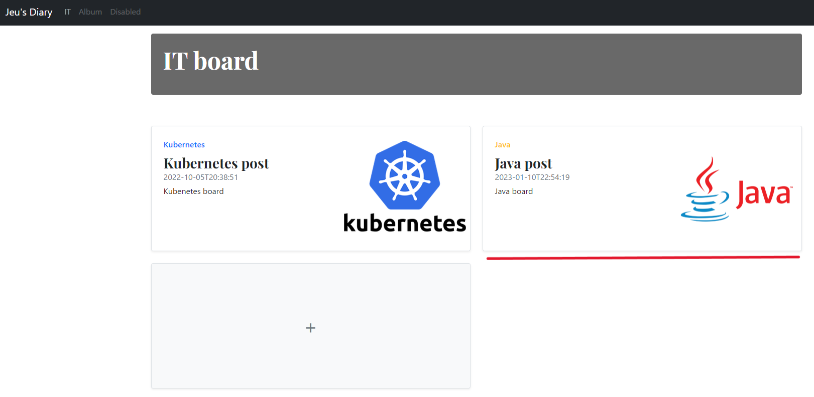
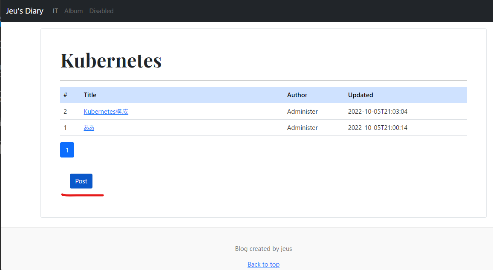
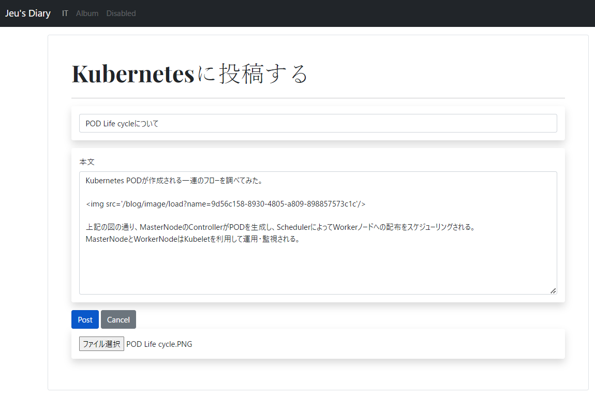
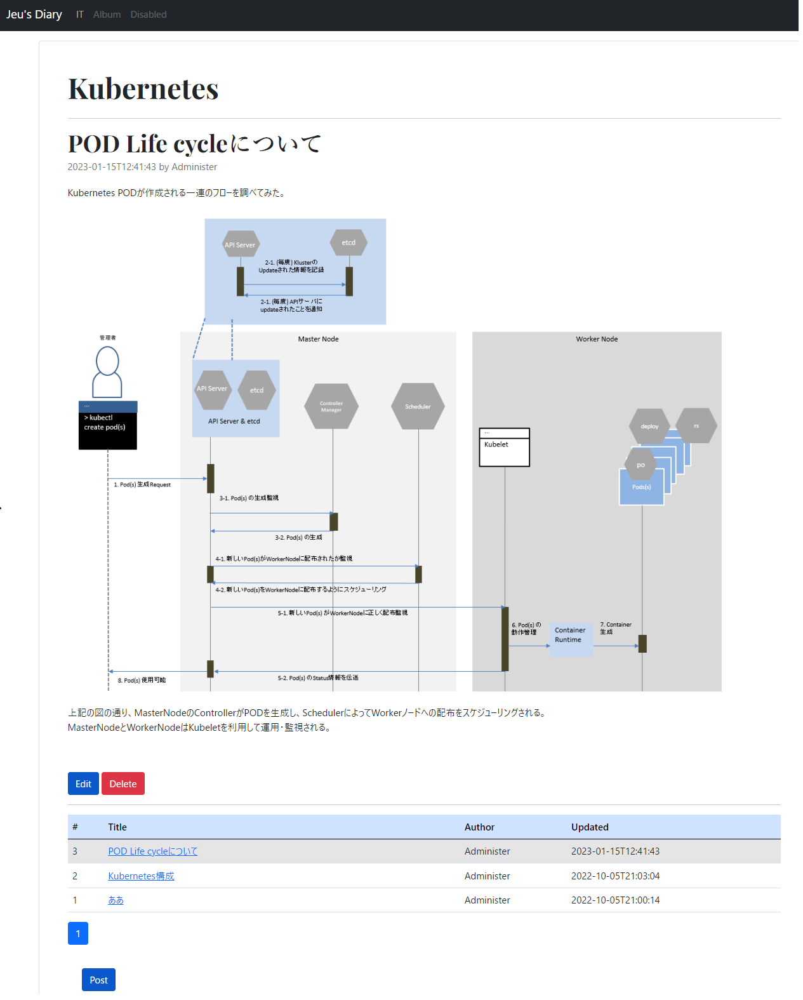
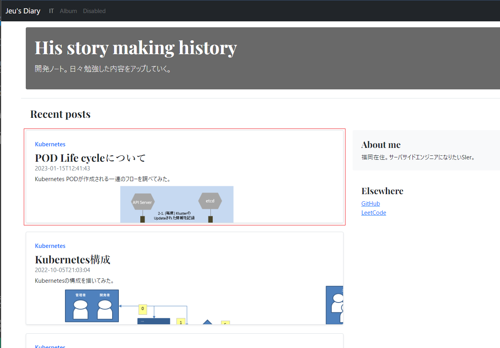

勉強および知識共有目的のブログです。日々勉強した内容や知識を記録します。
新規投稿機能や投稿の修正・削除機能を実現しました。
投稿はカテゴリ別に分類しました。
また、新しく投稿された場合や投稿の内容を修正した場合はTimeLineに最新順で表示する機能を実現しました。
開発期間
目的
使用した言語 / SKILL
ターゲット
世の中に公開して共有したいです。
今はBlogだけですが、今後様々なサービスを開発して展開して行きたいと思います。
デザインについて
Bootstrapのblog templateを基にcssやjsをカスタマイズしてデザインしました。
機能
Time Line
ページのロード速度を考慮し、Ajaxを利用して非同期で投稿一覧を取得します。
一回のリクエストに最新投稿10件を取得します。
スクロールしてページの最下段に移動した際に次の10件を取得するようにページング機能を実現しました。
一回のリクエストに最新投稿10件を取得します。
スクロールしてページの最下段に移動した際に次の10件を取得するようにページング機能を実現しました。
カテゴリ別section作成機能
言語やアプリケーションなどカテゴリ毎に投稿をまとめられるようにsection作成機能を設けました。
[IT board ページ]
新しい投稿ページを作成したい場合、「+」ボタンを押すことで作成できます。
[新しい投稿ボード作成ページ]
文字の色やメニューに表示するロゴを選択できます。
[新しい投稿ボード作成完了]

投稿機能
ページから新しい投稿を記載することができます。
日本語での投稿が可能ですし、イメージを添付することができます。
ただし、イメージのプレビューや編集機能がないため
今後文字スタイルやイメージの編集機能を実装することが目標です。
[投稿一覧イメージ]

[投稿作成イメージ]

[投稿作成後のイメージ]
投稿されたイメージは以下のように表示されます。

[投稿後のTimeLineイメージ]
投稿後、TimeLineに最新投稿として表示されます。
